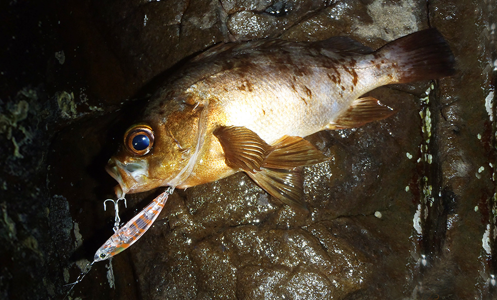
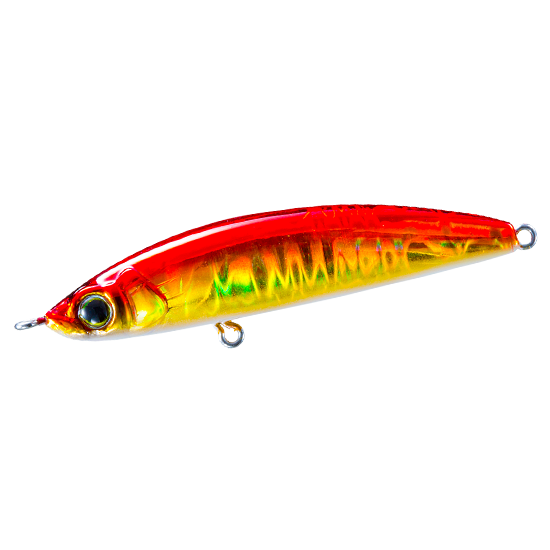
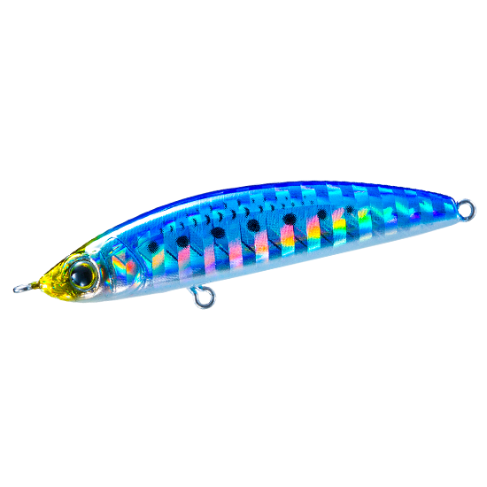
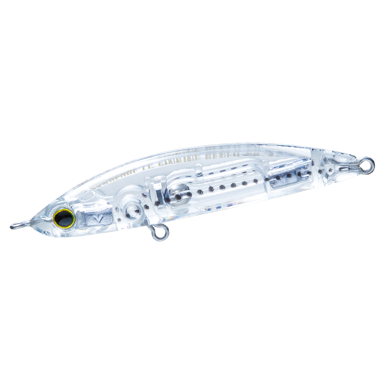
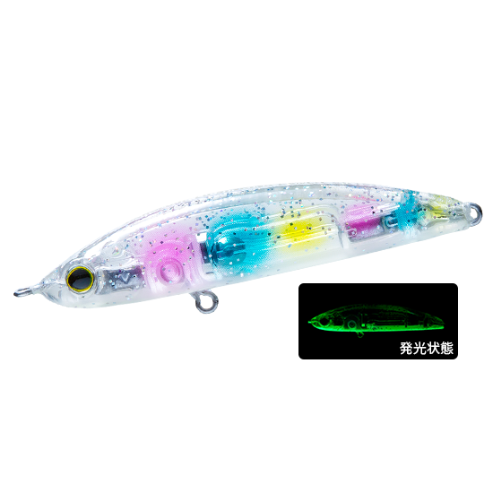

ハードコア LG シンキングペンシル50
（HARDCORE LG SINKING PENCIL）
ハードコア LG シンキングペンシルは、DUEL（デュエル）のライトゲーム用シンキングペンシルです。キャッチコピーは「ソフトルアーに釣り勝つ!!」。
ニューマグネット重心移動システムで、わずか4gで最大40mの飛距離を出し、逆風を切り裂いて大場所を攻められるのが最大の特徴です。

画像出典:デュエル公式HP
スペック
- メーカー
- DUEL（デュエル）
- タイプ
- シンキングペンシル
- 全長
- 50mm
- 重さ
- 4g
- レンジ
- 0〜30cm
- 公称の最大飛距離
- 40m
- フック
- #12
- リング
- #1
- カラー
- 全10色
- ターゲット
- メバル・アジ・根魚など
- 価格
- オープン価格
▼今すぐチェック
ハードコア LG シンキングペンシル50の特徴
ソフトルアーに釣り勝つ!! ナチュラルスイミングアクション
-
ニューマグネット重心移動システム
飛距離とキャストの正確さを出す重心移動に、素早く立ち上がる固定重心の長所を合わせた。わずか4gで最大40m飛ぶ。
-
変幻自在の喰わせアクション
ナチュラルなスイミングで、ミノーで食わない魚や、人気エリアのスレた魚に効く。
-
表層0〜30cmを引ける
レンジは0〜30cm。水面直下を、ゆっくりでも引きやすい。
ハードコア LG シンキングペンシル50の使い方
基本は、遠投して着水したら、水面直下をゆっくりただ巻きすることです。巻くスピードを落とすとレンジが少し下がるので、魚のいる層に合わせてスピードを調整しましょう。
反応がない時は、巻いている途中でロッドを軽くあおって、ふらっと泳ぎを乱すと食わせのきっかけになります。

画像出典:デュエル公式HP
ハードコア LG シンキングペンシル50の得意な状況
常夜灯まわりのメバルやアジ、根まわりの根魚を、表層〜水面直下で狙う時に出番です。風が強い日や、少し沖の潮目を狙いたい時にも向いています。
4gと軽いのに遠くまで飛んで、スレた魚にもナチュラルに見せられるのが強み。ワームで食わない時にもよく釣れるシンペンです。
ワンポイント
常夜灯の明暗では、明るい側に投げて、暗い側へ流れ込むように巻いてくると、暗がりで待っているメバルに自然に見せられます。
人気カラー
ハードコア LG シンキングペンシル50の人気カラーを紹介します。

アカキン朝夕のまずめや、常夜灯まわりに。

イワシカラーローテーションの軸になる王道カラー。

クリアーシラスシラスなど極小ベイトを食べている時の切り札。

グローベリーキャンディー夜光とラメ入り。カラーに迷ったらこれ。
※全10色。
画像出典:デュエル公式HP
▼今すぐチェック
ハードコア LG シンキングペンシル50に似ているルアー
-
 シュリペン55
レガーレ
詳細はこちら＞
シュリペン55
レガーレ
詳細はこちら＞
ライトゲーム用のペンシル。
-
 アミコン40S
ブルーブルー
詳細はこちら＞
アミコン40S
ブルーブルー
詳細はこちら＞
アミパターンに強い小型シンキング。
-
 アスリート55LL ロングキャスト
ジャクソン
詳細はこちら＞
アスリート55LL ロングキャスト
ジャクソン
詳細はこちら＞
飛距離重視のライトゲーム用プラグ。